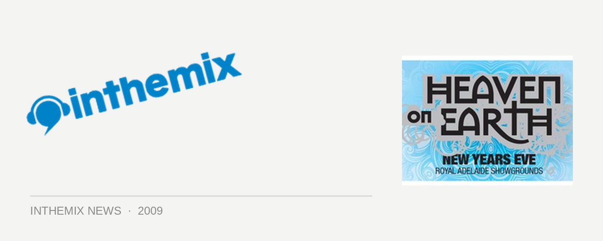

Heaven on Earth comes to Adelaide this New Years Eve
The dance music nation has been getting warmed up for the New Years celebrations with massive events being announced all over the country, and it’s no different for Adelaide which will be seeing a brand new event taking over on New Years Eve in the form of Heaven on Earth. Hitting the Royal Adelaide Showgrounds on Thursday 31st of December, the promoters are promising some of the most extravagant production we’ve ever seen at a South Australian dance event. Explosive lighting, lasers, theatrics, fireworks – the whole shebang.
Headlining the debut of Heaven on Earth will be German trance legends Kyau & Albert, veterans to the scene and the driving force behind the Euphonic label, and they’ll be joined by Sony inthemix50 #1 Tydi along with trance vocalist Fragma, The Potbelleez and a number of local favourites that includes Contagious and Brett James from Global Trance, Andrew Howlett and more.
Heaven on Earth comes to the Royal Adelaide Showgrounds on Thursday 31st of December from 6pm to 3am. Tickets on sale at ITM, check out the lineup below…
Kyau & Albert
Fragma
Tydi
The Potbeleez
Spencer & Hill
Tommy Trash
Sgt Slick
Denzal Park
Andrew Howlett
Dr Damage
Gex & Megabyte
Reelax
Contagious
Brett James
Audrey Gallagher
Simone